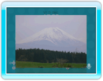

Je kunt foto’s die je op een SD-kaart of op het Wii-prikbord hebt opgeslagen, aan je gesprekspartners laten zien.
14 |
Foto’s laten zien |
 |

Zodra je gesprekspartners de foto hebben ontvangen, verschijnt hij in de praatzaal (en niet in de lobby).
|
 |
 |
 |